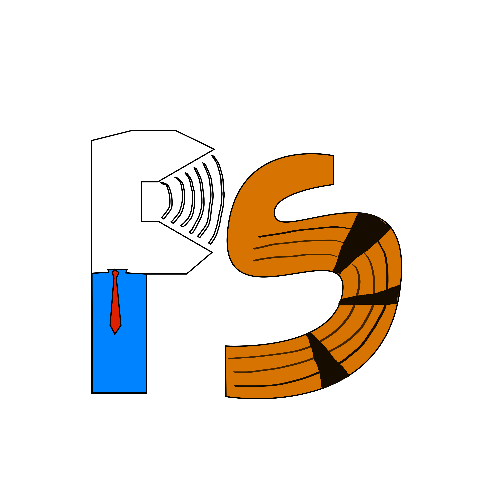

MA · Research Assistant · Jožef Stefan Institute
Speech Scientist & Corpus Phonetician
Acoustic phonetics · Paralinguistic feature extraction · ASR & speech transformer fine-tuning · Corpus construction · Machine learning for speech and language
I'm a speech scientist and corpus/computational phonetician working at the Jožef Stefan Institute in Ljubljana, where I research how people speak — prosody, disfluency, sentiment — and build the tools and corpora needed to study it at scale.
My work sits at the intersection of acoustic phonetics, machine learning, and large-scale corpus engineering. In practice this means: designing spoken corpora from parliamentary recordings across four Slavic languages, fine-tuning and deploying speech transformer models for paralinguistic tasks (primary stress, filled pauses, acoustic sentiment), running statistical analyses on the results, and building open-source hardware and software when the right tool doesn't exist yet.
I care about transparency: open data, open code, reproducible pipelines. When I build something, I try to make sure anyone else can pick it up and run with it.
A mix of research tooling and personal hardware/software builds. Research Personal
Open-source single-channel MEMS mic preamp. Pair two boards for acoustic nasalance, or run one as a general-purpose balanced mic.
Open-source, offline-first, ML-capable wrist-mounted sensor platform. ESP32-S3, dense sensor suite, on-device neural nets.
Tutorial-first toolkit for training and fine-tuning speech transformer models on Slavic languages. Notebooks for learning, scripts for production.
Project in progress — stay tuned!

Spoken parliamentary corpora — Croatian, Serbian, Czech, Polish · 6,000+ hours
ParlaSpeech is the central thread of my research. It's a multilingual collection of spoken parliamentary corpora built by aligning ParlaMint transcripts to session recordings, now covering four Slavic languages and six thousand hours of speech. In its 3.0 release the corpora are enriched with five automatic annotation layers: linguistic annotation, sentiment, filled-pause detection, word-level alignment, and primary stress — all of which are products of work I've been directly involved in.
parlaspeech → clarinsi.github.ioProsody, primary stress identification, acoustic feature extraction from parliamentary and naturalistic speech.
Filled pause detection, sentiment analysis and acoustic correlates of sentiment across Slavic languages.
Fine-tuning and deploying wav2vec2-family models for frame-level classification tasks; cross-lingual transfer.
Spoken corpus bootstrapping from parliamentary recordings; alignment pipelines; annotation layer design.
Cross-lingual model evaluation, SVM baselines, statistical comparison of model and human performance.
Custom MEMS microphone preamps and wearable sensor platforms designed for phonetic and health research.
Early parent–infant communication corpus research (J6-70222 / ARIS).
Large language models for digital humanities research.
Infrastructure program, CLARIN.SI / CLARIN ERIC (I0-E004).
Multimodal and multilingual parliamentary speech analysis.
Authors listed as published. My name in bold.
Umm… With Transformers? Insights from Filled Pause Use across Four Slavic Parliaments
@inproceedings{porupski2026umm,
title = {Umm{\ldots} With Transformers? {Insights} from Filled Pause Use
across Four {Slavic} Parliaments},
author = {Porupski, Ivan and Dropulji{\'c}, Branimir and
Ljube{\v{s}}i{\'c}, Nikola},
booktitle = {Proceedings of Interspeech 2026},
year = {2026},
note = {Accepted}
% ⚠ Needs to be checked — not yet indexed
}
Past the Rapids: Downstream Research on ParlaSpeech
@inproceedings{porupski2026rapids,
title = {Past the Rapids: Downstream Research on {ParlaSpeech}},
author = {Porupski, Ivan and Ljube{\v{s}}i{\'c}, Nikola},
booktitle = {Proceedings of the CLARIN Annual Conference 2026},
year = {2026},
note = {Accepted}
% ⚠ Needs to be checked — not yet indexed
}
Opinionated, Hesitant and Stressed: Three Studies of How Politicians Speak in Four Slavic Parliaments
@inproceedings{porupski2026opinionated,
title = {Opinionated, Hesitant and Stressed: Three Studies of How
Politicians Speak in Four {Slavic} Parliaments},
author = {Porupski, Ivan and Ljube{\v{s}}i{\'c}, Nikola},
booktitle = {Proceedings of the Conference on Language Technologies
and Digital Humanities (JTDH 2026)},
year = {2026},
note = {Accepted}
% ⚠ Needs to be checked — not yet indexed
}
ParlaSpeech 3.0: Richly Annotated Spoken Parliamentary Corpora of Croatian, Czech, Polish, and Serbian
@misc{ljubesic2025parlaspeech30,
title = {{ParlaSpeech} 3.0: Richly Annotated Spoken Parliamentary
Corpora of Croatian, Czech, Polish, and Serbian},
author = {Ljube{\v{s}}i{\'c}, Nikola and Rupnik, Peter and
Porupski, Ivan and {Kuzman Punger{\v{s}}ek}, Taja},
year = {2025},
eprint = {2511.01619},
archivePrefix = {arXiv},
primaryClass = {cs.CL},
url = {https://arxiv.org/abs/2511.01619}
% ⚠ Needs to be checked — verify final proceedings citation
}
State of the Art in Text Classification for South Slavic Languages: Fine-Tuning or Prompting?
@misc{kuzmanpungersek2025stateofart,
title = {State of the Art in Text Classification for {South Slavic}
Languages: Fine-Tuning or Prompting?},
author = {{Kuzman Punger{\v{s}}ek}, Taja and Rupnik, Peter and
Porupski, Ivan and Dini{\'c}, Vuk and
Ljube{\v{s}}i{\'c}, Nikola},
year = {2025},
eprint = {2511.07989},
archivePrefix = {arXiv},
primaryClass = {cs.CL},
url = {https://arxiv.org/abs/2511.07989}
% ⚠ Needs to be checked — verify final proceedings citation
}
Identifying Primary Stress Across Related Languages and Dialects with Transformer-based Speech Encoder Models
Proc. Interspeech 2025, pp. 5768–5772
@inproceedings{ljubesic2025primarystress,
title = {Identifying Primary Stress Across Related Languages and
Dialects with Transformer-based Speech Encoder Models},
author = {Ljube{\v{s}}i{\'c}, Nikola and Porupski, Ivan and
Rupnik, Peter},
booktitle = {Proceedings of Interspeech 2025},
pages = {5768--5772},
year = {2025},
doi = {10.21437/Interspeech.2025-205}
}
Identifying Filled Pauses in Speech Across South and West Slavic Languages
Proc. SlavNLP 2025 (ACL), pp. 1–8, Vienna
@inproceedings{ljubesic2025filledpauses,
title = {Identifying Filled Pauses in Speech Across
{South} and {West Slavic} Languages},
author = {Ljube{\v{s}}i{\'c}, Nikola and Porupski, Ivan and
Rupnik, Peter},
booktitle = {Proceedings of the 10th Workshop on Slavic Natural
Language Processing (Slavic NLP 2025)},
pages = {1--8},
year = {2025},
address = {Vienna, Austria},
publisher = {Association for Computational Linguistics},
url = {https://aclanthology.org/2025.bsnlp-1.1/}
}
The ParlaSpeech v3 Collection of Spoken Parliamentary Corpora from the Croatian, Czech, Polish and Serbian Parliament Enriched with Linguistic and Paralinguistic Annotation Layers
@inproceedings{ljubesic2025parlaspeechv3clarin,
title = {The {ParlaSpeech} v3 Collection of Spoken Parliamentary Corpora
from the {Croatian}, {Czech}, {Polish} and {Serbian} Parliament
Enriched with Linguistic and Paralinguistic Annotation Layers},
author = {Ljube{\v{s}}i{\'c}, Nikola and Rupnik, Peter and
Porupski, Ivan and {Kuzman Punger{\v{s}}ek}, Taja},
booktitle = {CLARIN Annual Conference Proceedings 2025},
pages = {137--142},
year = {2025}
}
Dataset for Primary Stress Identification in Croatian and Related Languages and Dialects
@misc{ljubesic2025stressdataset,
title = {Dataset for Primary Stress Identification in {Croatian}
and Related Languages and Dialects},
author = {Ljube{\v{s}}i{\'c}, Nikola and Rupnik, Peter and
Porupski, Ivan and Robida, Nejc and Poto{\v{c}}njak, Mirna},
year = {2025},
note = {Slovenian language resource repository CLARIN.SI},
url = {https://www.clarin.si/repository/xmlui/handle/11356/1833}
% ⚠ Handle / URL needs to be checked
}
I'm a co-author of the CLASSLA-Express 3.0 workshop cycle — Speech and Web Corpora in the Study of Language Variation — where I designed the spoken-corpus (ParlaSpeech) component and its original teaching materials and hands-on exercises, and I deliver those workshops. The series provides hands-on training in NLP tools for South Slavic languages, run under the CLARIN Knowledge Centre umbrella.
PDF version available on request, or see the full academic record on SICRIS.